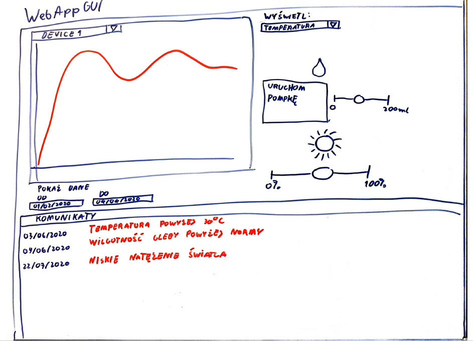

WebAppGUI
Opis
WebAppGUI jest to aplikacja webowa przeznaczona dla użytkownika w celu zarządzania całym środowiskiem. Użytkownik może, za jej pomocą, wizualizować otrzymane dane, oraz sterować parametrami takimi jak wilgotność gleby oraz natężenie światła. Aplikacja może być uruchomiona lokalnie - użytkownik będzie musiał być w tej samej sieci by móc się nią posługiwać, lub uruchomiona na środowisku Azure App Service, przez co użytkownik będzie miał dostęp do aplikacji z każdego miejsca gdzie będzie miał dostęp do internetu.
Schemat aplikacji

Na powyższym rysunku jest pokazany szkic projektu aplikacji WebAppGUI.
Opis kodu projektu
Kod projektu jest dostępny w branchu app_develop.
TODO
Status obecny
Na chwilę obecną udało się stworzyć podstawową wersję prezentacyjną. Pozwala ona na stworzenie wykresu na podstawie otrzymanych danych z Iot Hub'a. W celach testowych aplikacja obsługuje 2 podstawowe typy otrzymanych danych (Temperatura i wilgotność). Wynik jest widoczny na poniższym obrazku.

Prace są wykonywane na branchu app_develop.
Wymagane: - Wersja python >= 3.6 - Posiadanie instancji IoT Hub - Posiadanie instancji Azure Cosmos DB
Uruchomienie:
-
Ściągnąć repozytorium
git clone https://github.com/Kankarollo/IoTAzurePi.git -
Przenieść się na branch komunikacji dwustronnej
git checkout origin\app_develop -
Zainstalować wymagane biblioteki :
python -m pip -r requirements.txt -
Ustawić zmienne środowiskowe
- IotHubConnectionString - Znajdziemy je w iot hub/Shared access policies/service pole Connection string-primary key.
- EventHubConsumerGroup - W iot hub/settings/built-in endpoints nazwa Consumer Groups. Domyślnie - "$Default".
-
mongoDBConnectionString - azure comsos DB account/Settings/Connection String/ Pole Primary Connection String
Linux
export IotHubConnectionString='device connection string' export EventHubConsumerGroup='event ' export mongoDBConnectionString='device connection string'Windows (cmd)
set IotHubConnectionString='device connection string' set EventHubConsumerGroup='event ' set mongoDBConnectionString='device connection string' -
Uruchom program main.py
python main.py